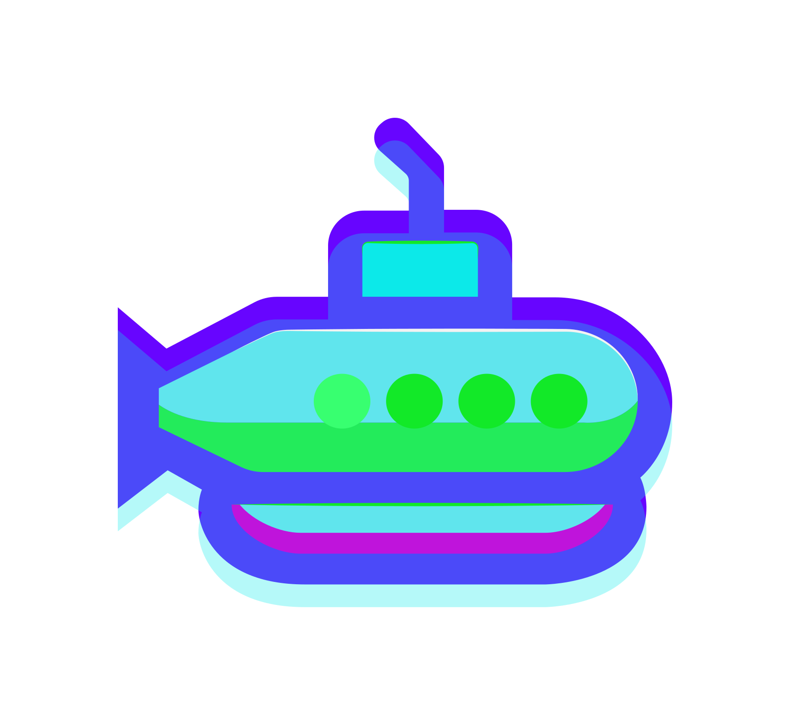
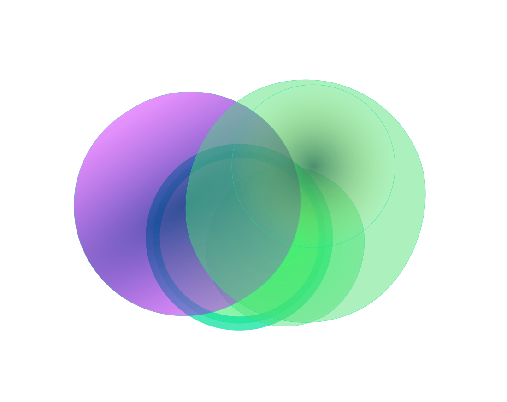
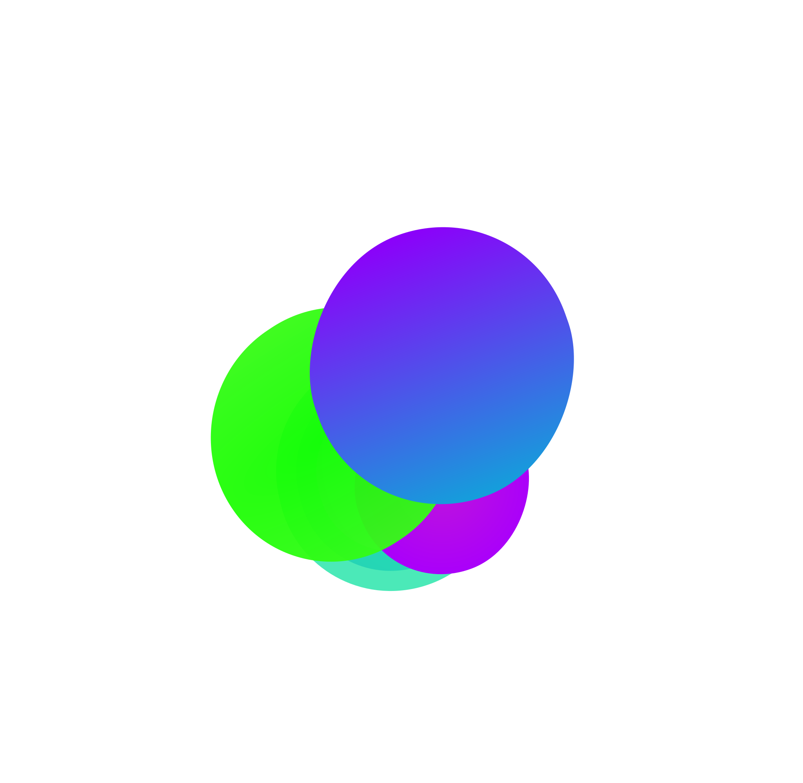
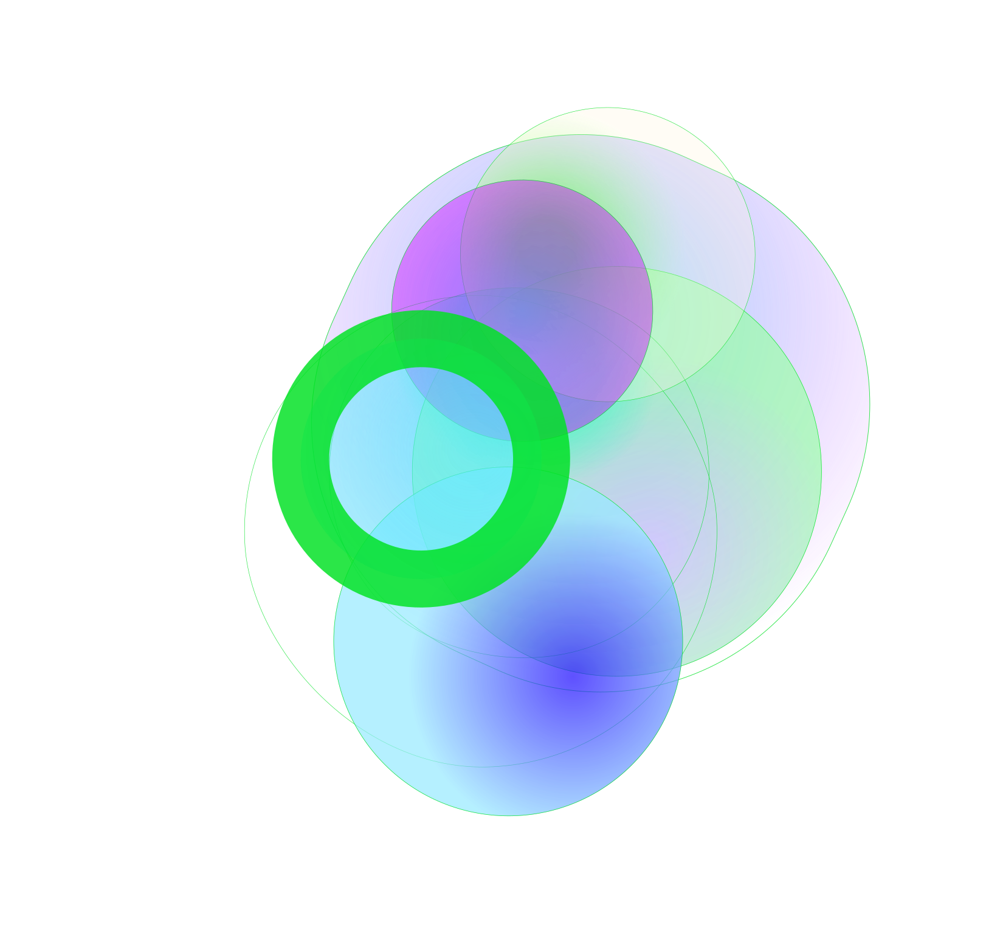
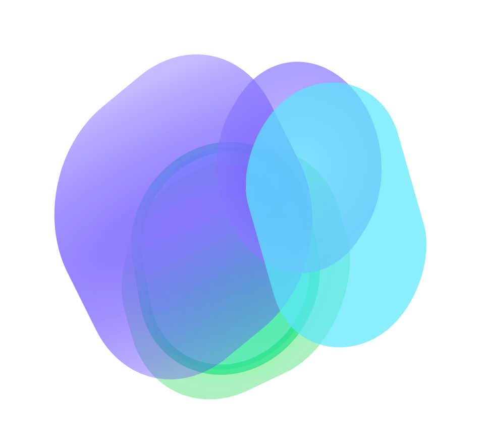

Empower Your Web Experience With Gosub
Discover a customizable browser engine built for the modern web.

Empower Your Browser with Gosub's Modularity
Gosub is a browser engine that puts customization at the forefront. With its modular design, you can tailor your browsing experience to suit your needs. Whether you want to tweak the CSS engine, enhance the HTML parser, or optimize the rendering pipeline, Gosub gives you the power to shape your browser.
Select your JS engine
Customizable Rendering pipeline
Select your JS engine

Current status of the project
Ride now, we are working on the core components of the browser like the CSS System, rendering pipeline or JS Integration

Join us and contribute today!
Become part of our open-source community and help shape the future of browsing.
